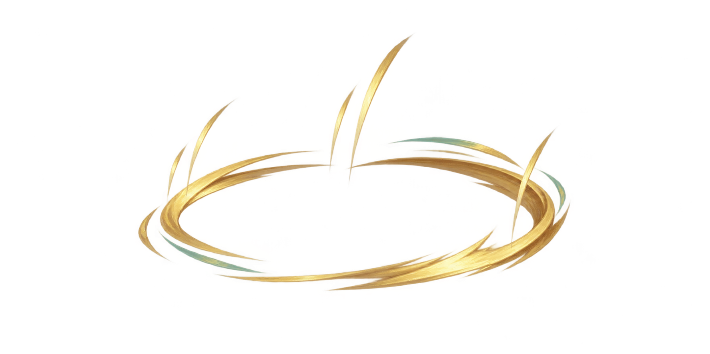

Static original PNG at proposed review sizes. No animation, pivot, layering or runtime approval. The image has substantial transparent padding; 132 px canvas width shows about 81 px of effect.

Open center helps visibility, but strokes still need front/back layer decisions when used around a character. This static HTML is a review aid, not gameplay.